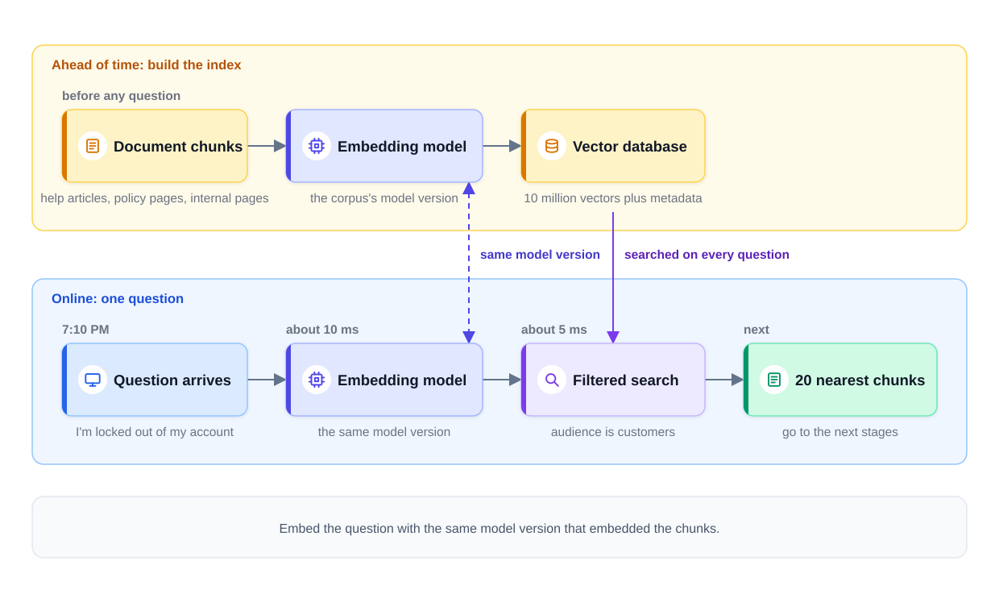
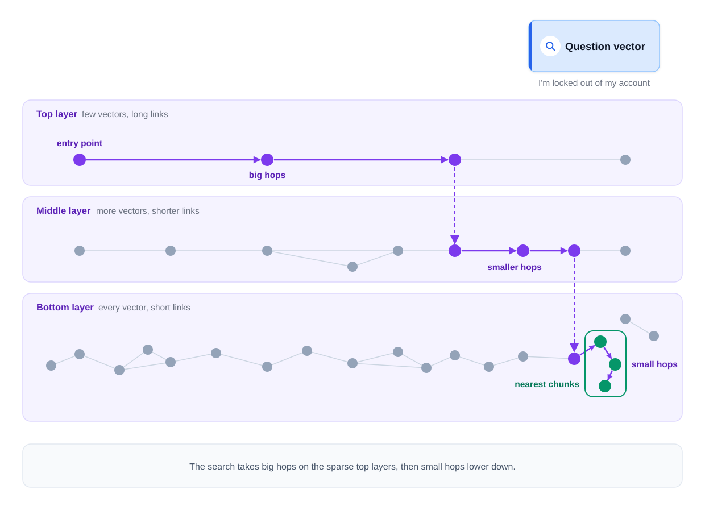
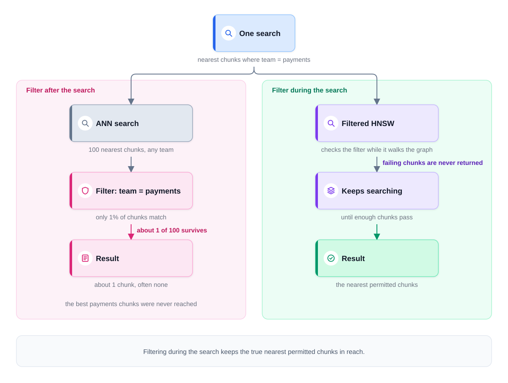

0% completed
Embeddings and Vector Databases
On This Page
Know the Vocabulary
Part 1: Search by Meaning, Not by Words
The Running Example
Part 2: What an Embedding Is
The Definition
Measuring Closeness With Cosine Similarity
Embedding Models Are Cheap to Run
What an Embedding Is Not
The Same Geometry as Recommendations
Part 3: Embeddings Are Frozen Meaning
Rule 1: Embed the Question With the Corpus's Model
Rule 2: Re-Embed a Chunk When Its Text Changes
Rule 3: A New Model Means Re-Embedding Everything
Part 4: Finding the Nearest Vectors Fast
Exact Search Compares Every Vector
An ANN Index Trades a Little Recall for Speed
What ANN Is Not
Part 5: How HNSW Searches
The Graph and Its Layers
How a Search Moves
What HNSW Usually Delivers
Measure Recall, Do Not Assume It
Part 6: How Much Memory the Index Needs
Part 7: From Index to Vector Database
Filtering: Where the Filter Runs Matters
Updates and Deletes
Part 8: Choosing a Vector Store
Part 9: Follow One Question
Part 10: Using This in an Interview
Common Mistakes
Mistake 1: Mixing Embedding Models
Mistake 2: Treating a Model Upgrade as a Setting
Mistake 3: Trusting Recall Without Measuring It
Mistake 4: Filtering After the Search
Mistake 5: Forgetting Deletes and Caches
FAQs
Key Takeaways
Check Your Understanding
Know the Vocabulary
This lesson uses the terms below many times. Read them once now, and come back here when a later section needs one.
- Chunk: A focused passage cut from a document, usually a few hundred words or fewer. It is the unit that retrieval works with.
- Retrieval: Finding the chunks that best match a question, so that a later step can use them.
- Vector: A list of numbers, such as (0.12, 0.80, 0.05).
- Embedding: A vector that encodes the meaning of a piece of text. Texts with similar meanings get similar vectors.
- Embedding model: A model that reads a piece of text and returns its embedding.
- Dimension: One position in a vector. An embedding with 1,024 dimensions is a list of 1,024 numbers.
- Cosine similarity: A single score for how related two texts are, computed from their two vectors. A higher score means a closer meaning.
- Exact search: Finding the nearest vectors by comparing the query vector with every stored vector, one by one.
- ANN index: An approximate nearest neighbor index. It finds nearly the closest vectors without checking every vector, so it is much faster than exact search.
- Recall: The share of the true best matches that a search actually finds.
- HNSW: A common type of ANN index. It links the vectors into a graph with several layers.
- Quantization: Storing each number of a vector in fewer bits, so the index takes less memory.
- Metadata: Facts stored with each chunk, such as its source, its team, its date, and who may read it.
- Vector database: A system that stores vectors with their metadata, searches them with an ANN index, and handles updates, deletes, and failures like any other database.
- Sharding: Splitting one large index across several machines, so each machine holds only part of it.
Part 1: Search by Meaning, Not by Words
The Module 1 capstone scoped a support assistant for the food-delivery company. To answer well, that assistant must first find the right help article. This lesson builds the part that finds it.
Here is the problem. A customer types the words "I'm locked out of my account" into the chat. The help center has an article titled "How do I reset my password?" and that article is the right answer.
Yet the two sentences share almost no words. A keyword search looks for documents that contain the words of the question. It finds "account" in hundreds of articles and "locked" in a few. It may never rank the password article first.
The name for this failure is vocabulary mismatch: the user and the document describe the same thing with different words. It is the core failure of keyword search.
A person sees at once that both sentences mean the same thing. Retrieval needs the same skill, a way to compare meaning instead of spelling. Embeddings give it that skill.
The Running Example
The company runs one retrieval service for its support assistant and its internal help tools. The service holds three kinds of documents:
- Help articles for customers, such as "How do I reset my password?"
- Policy pages for support agents, such as the refund rules.
- Internal pages for employees, such as HR documents and team guides.
Each document is cut into chunks, and suppose the three sets together come to 10 million chunks. That number is an example assumption, used through the rest of this lesson. Chunking and Indexing explains how documents become chunks. This lesson starts once the chunks exist.
Part 2: What an Embedding Is
The Definition
An embedding model reads a piece of text and returns a vector. The vector is a list of numbers that encodes the text's meaning. Common models return a few hundred to a few thousand numbers. This lesson uses 1,024 numbers per vector as its example.
The model learned its numbers from very large amounts of text. During that training, texts with similar meanings were pushed toward similar vectors. So "How do I reset my password?" and "I'm locked out of my account" get vectors that sit close together. They share almost no words, but they mean nearly the same thing. The embedding captures the meaning, not the wording.
Measuring Closeness With Cosine Similarity
Two vectors can be compared with cosine similarity. Picture each vector as an arrow that starts at the same point. Cosine similarity measures how closely the two arrows point in the same direction. It turns that comparison into one number.
- A score near 1 means the arrows point almost the same way, so the texts are closely related.
- A score near 0 means the arrows point in unrelated directions, so the texts are about different things.
- Scores can go as low as -1, but text embeddings rarely produce scores that low.
The table below shows illustrative scores for three chunks against the customer's question. Real scores depend on the model, and each model has its own typical range.
| Chunk | Shared words with the question | Cosine similarity |
|---|---|---|
| "How do I reset my password?" | Almost none | 0.82 |
| "Change the email address on your account" | "account" | 0.55 |
| "What time does the restaurant close?" | None | 0.08 |
Notice that word overlap does not decide the score. The password chunk shares the fewest words, yet it scores highest. The email chunk shares the word "account," but its meaning is further away.
Many systems scale every vector to a length of exactly 1. After that step, cosine similarity equals the dot product of the two vectors. That is the same dot product that Embeddings and Two-Tower Retrieval used to score users against items.
Embedding Models Are Cheap to Run
An embedding model is usually much smaller than a large language model (LLM). It reads text and returns numbers, and it does not write any words. So it is usually much cheaper per token and much faster. A token is a short word or a piece of a longer word. Embedding models also accept large batches of text in one call, so they are easy to call in bulk.
This difference shapes the design. Embedding all 10 million chunks is a large batch job, but an affordable one. Embedding each new question adds only a short delay to a request, for example about 10 ms. Check current prices before you quote exact numbers, because they change often.
What an Embedding Is Not
An embedding is not a summary of the text. A person cannot read the text in the numbers, and no single number has a clear meaning on its own.
An embedding is not safe to share just because it looks like noise. Research has shown that much of a text can sometimes be rebuilt from its embedding. So protect the vectors of private documents as carefully as the documents.
An embedding is not a list of keywords. It encodes meaning, which is why two sentences with different words can get close vectors.
An embedding is not portable between models. Each model places text in its own coordinate space. A vector from one model means nothing to another model. The next part explains why that rule matters so much.
The Same Geometry as Recommendations
This idea is not new in the course. In Design a Recommendation System, a user tower and an item tower turned users and items into vectors in one shared space. An ANN index then found the items nearest to each user.
Semantic retrieval is the same two-tower geometry. What changed is what fills the towers: here, both towers are text encoders. One embeds the question, and the other embeds the chunks, and they are often the same text model.
The serving split is also the same. Chunks are embedded ahead of time, as the item tower embedded the catalog every night. The question is embedded when it arrives, as the user tower ran on each request.
Part 3: Embeddings Are Frozen Meaning
An embedding is a snapshot of what one model thought one text meant at the moment it was computed. After that, it never changes by itself, so you can think of it as frozen meaning. That fact creates three rules.
Rule 1: Embed the Question With the Corpus's Model
The corpus is the full set of stored chunks. Every chunk in it was embedded by one model version. The question must be embedded by that same model version.
The reason is the coordinate space, because model A and model B each place text in their own space. A question vector from model B compared with chunk vectors from model A gives scores that mean nothing. The search still returns results, and nothing reports an error. But the results are close to random.
Rule 2: Re-Embed a Chunk When Its Text Changes
Suppose the refund policy changes from 30 days to 14 days, and someone edits the policy page. The page now says 14 days, but the index still holds the old chunk, and its stored vector still describes the old text. A question about refunds still finds that stale chunk, and the assistant answers with 30 days.
So every edit must trigger a re-embed of the chunks that changed. The vector database never notices an edit on its own, so the ingestion pipeline must send it. Chunking and Indexing covers that pipeline.
Rule 3: A New Model Means Re-Embedding Everything
Suppose a better embedding model appears. Switching to it is not a simple change to a setting. Every one of the 10 million chunks must be embedded again, because old and new vectors live in different spaces. This is a real migration, with its own plan and its own budget.
Step 1: Re-embed the corpus. Run every chunk through the new model. This is a large batch job, and it can take hours or days.
Step 2: Build a second index. Store the new vectors in a new index, next to the old one, while the old index keeps serving users.
Step 3: Compare the two. Run real questions against both indexes. Check that the new model finds the right chunks at least as often as the old one.
Step 4: Switch both together. Move the question-side model and the index to the new version in one step. Keep the old pair ready for a rollback.
Notice that Step 4 switches two things at once. A new question model against an old index is version skew: two parts running from versions that were not built to work together. Two-tower retrieval has the same silent failure.
The diagram below shows the full path. Chunks are embedded ahead of time, and each question is embedded with the same model version when it arrives. Part 7 explains the filter in the search, and Part 9 follows this path step by step.

Part 4: Finding the Nearest Vectors Fast
Exact Search Compares Every Vector
The simplest search compares the question's vector with every stored vector, one by one, and keeps the closest ones. This is exact search, and it always finds the true best matches.
Each comparison with 1,024 numbers takes about 1,024 multiplications. Now count the work at two sizes.
| Corpus size | Multiplications per question | Vector data read per question |
|---|---|---|
| 100,000 chunks | About 100 million | About 400 MB |
| 100 million chunks | About 100 billion | About 400 GB |
At 100,000 chunks, exact search is fine. A single server can finish the work quickly. At 100 million chunks, every question costs a thousand times more work. Reading about 400 GB for each question is far too slow for a user who is waiting.
An ANN Index Trades a Little Recall for Speed
An ANN index organizes the vectors ahead of time. A search then checks only a small part of them. It is much faster, but it can miss a few of the true best matches.
That loss is measured as recall, the share of the true best matches that the search actually finds. Suppose exact search says the 10 best chunks are a certain set of 10. The ANN index returns 9 of them and one slightly worse chunk. Its recall for that question is 9 out of 10, or 90%.
So an ANN index gives up a small share of recall to gain a large speedup. The goal is to keep that share small, and to know exactly how small it is.
What ANN Is Not
An ANN index does not return random results. Its misses are usually near misses, chunks that were almost as close as the ones it returned.
An ANN index does not change the meaning of the vectors. Cosine similarity still scores every chunk it checks. The index only decides which chunks get checked.
Part 5: How HNSW Searches
HNSW stands for Hierarchical Navigable Small World. It is one of the most common ANN indexes.
The Graph and Its Layers
HNSW links each vector to a few of its nearest neighbors. The vectors and their links form a graph. Then it builds layers on top of that graph.
- The bottom layer holds every vector. Its links are short, because each vector links to its close neighbors.
- Each higher layer holds fewer vectors. A random sample of the layer below is copied up.
- The top layer holds only a few vectors. Its links are long, because those few vectors are far apart.
How a Search Moves
A search starts at a fixed entry point on the top layer. At each layer, it moves to whichever linked vector is closer to the question. When no linked vector is closer, it drops down one layer and continues.
So the search takes big hops on the sparse top layers, then small hops lower down. The top layers bring it to the right region quickly. The bottom layer finds the closest neighbors inside that region.
One comparison may help, and each part of it maps to the index:
- A flight between cities is a hop on the top layer. It covers a long distance in one step.
- A highway between towns is a hop on a middle layer. It gets closer to the goal, in shorter steps.
- Local streets are hops on the bottom layer, and they reach the exact address.
- The exact address is the set of chunks nearest to the question.
The diagram below shows a search moving down through three layers.

What HNSW Usually Delivers
A tuned HNSW index that fits in memory often answers in single-digit milliseconds. At that speed, it often finds 95 to 99% of the true best matches. These are typical results, not a guarantee.
The main search setting for this trade is how many candidate vectors the search keeps while it moves. A wider search finds more of the true matches but takes longer. A narrower search is faster but misses more.
Measure Recall, Do Not Assume It
A vendor's recall number was measured on someone else's data, and your data may behave differently. So measure recall on your own corpus.
Step 1: Take a sample of real questions. For example, a few thousand recent questions.
Step 2: Run exact search on each one. Exact search is slow, but this is an offline test, so the time is acceptable. Its results are the ground truth, the correct answers the test compares against.
Step 3: Run the ANN index on the same questions. Count how many of the true best matches it found.
Step 4: Repeat after every change. A new model, new settings, or a much larger corpus can each change recall.
Recall matters more than it first appears. Retrieval is the first stage of a funnel, a series of stages that each pass fewer results to the next one. A chunk lost at this stage never reaches any later stage. So the share of right chunks that each stage keeps multiplies down the funnel. Suppose the ANN index keeps the right chunk 95% of the time, and a later stage keeps it 90% of the time. Then the right chunk survives both stages only about 85% of the time.
Part 6: How Much Memory the Index Needs
HNSW is fast because the vectors and links sit in memory. So memory is the first cost to estimate.
Step 1: Size one vector. Each number takes 4 bytes, so a vector with 1,024 numbers takes 4,096 bytes, about 4 KB.
Step 2: Multiply by the corpus. 10 million chunks times 4,096 bytes is about 40.96 GB, or roughly 40 GB.
Step 3: Add the graph. The links between vectors need extra memory on top of the vectors. This graph overhead depends on the index settings.
Step 4: Add the copies. Production systems keep extra copies of the index for reliability and for more traffic. Each copy needs the full memory again.
Two tools reduce this cost.
Quantization stores each number in fewer bits. A 4-byte number uses 32 bits, and storing it in 8 bits instead makes the vectors about four times smaller. The 40 GB of vectors shrink to about 10 GB. The numbers lose some precision, so recall can drop a little. Measure it with the test in Part 5.
Sharding splits the index across machines. Each shard holds part of the vectors. A question goes to every shard, each shard returns its own best matches, and a final step merges them. Sharding is needed when the index is too large for one machine.
For example, suppose a larger company has 120 million chunks with 1,024 numbers each. The vectors alone take about 490 GB, before the graph and the copies. With those added, the total is more memory than most single servers hold. Quantization would help, but at this size, and with room to grow, the index is usually sharded as well.
Part 7: From Index to Vector Database
An ANN index answers one question: which vectors are nearest to this one? A production system needs much more than that. A vector database adds three things around the index.
-
Metadata filtering. It stores metadata with each chunk and restricts searches to the chunks that match it.
-
Live updates. It accepts new chunks, edits, and deletes while it keeps serving searches.
-
Database virtues. It keeps data safe through a crash, copies it to other machines, takes backups, and shards it across machines.
Filtering: Where the Filter Runs Matters
Most real questions come with a filter. A customer may read only help articles. An employee may read only the pages they have access to. So a support agent's search may really mean "nearest chunks where team = payments and this user has access."
There are two ways to apply that filter.
Filter after the search. The ANN index returns the 100 nearest chunks from the whole corpus, and the system then removes every chunk that fails the filter. This approach is called post-filtering.
Post-filtering breaks when the filter is selective, which means it matches only a small share of the chunks. Suppose only 1% of chunks belong to the payments team, spread evenly through the corpus. Then about 1 of the 100 nearest chunks survives, and often none does. The best payments chunks may sit at rank 300, and the search never reached them. The user gets an empty or weak answer, and no error appears.
Filter during the search. The engine checks the filter while it walks the HNSW graph. The search may pass through chunks that fail the filter on its way to others, but it never returns them. The search keeps going until it has collected enough chunks that pass, an approach often called filtered HNSW.
Filtered search keeps the true nearest permitted chunks in reach. Engines differ in how they do it. Some switch to exact search over the small filtered set when a filter matches very few chunks. Test your engine with your real filters.
The diagram below compares the two ways on the payments example.

Permission filters also need current data. A user who lost access this morning must not see the chunk this afternoon. Capstone: Enterprise Document Q&A builds the full permissions design.
Updates and Deletes
The source systems, such as the wiki and the help center, own the documents. Inside the retrieval system, the source of truth is the document store. It holds the latest version of each document, with its text and its chunks. The vector index is a copy derived from it. Every change in a source must reach the document store and then the index.
Deletes are the most serious kind of change. Suppose an HR page is deleted from the wiki, but its chunks stay in the index. The assistant keeps quoting that page in its answers. This is an incident, not a minor bug. The index failed to honor a deletion promptly, and it may be showing content that must no longer be shown.
The steps below show the safe order for a deletion, such as one required for legal reasons.
Step 1: Mark the document as deleted in the source of truth. This marker in the document store is called a tombstone, and it records that the document is gone. Because the source of truth changes first, no later sync or rebuild brings the document back.
Step 2: Propagate the delete. Spread it to every copy. Remove the chunks from the vector index first. Then remove them from every cache, including cached answers that quoted the document. Many engines first hide a deleted vector from results, and then clean up the graph later. For a legal delete, confirm that this cleanup also runs, because a hidden vector is still stored until then.
Step 3: Verify. Search for the document's content and confirm that nothing returns. Record the check, so the deletion can be proven later.
Part 8: Choosing a Vector Store
Teams usually pick between two kinds of store. One is a vector extension for a database you already run, such as pgvector for Postgres. The other is a dedicated vector database, such as Qdrant, Milvus, Weaviate, or Pinecone.
Choose by scale and by how complex the filters are. Do not choose by which brand sounds most impressive.
| Situation | A reasonable starting point |
|---|---|
| A few million chunks, simple filters, Postgres already in use | A vector extension, such as pgvector |
| Tens of millions of chunks, or filters that match only a small share | Test both on your data before you decide |
| Hundreds of millions of chunks, strict permissions, sharding needed | A dedicated vector database |
These lines are rough, and they move as the tools improve. An extension keeps the vectors next to the rest of your data, with one system to run. A dedicated engine usually offers more control over sharding, filtered search, and index settings.
Now apply the table to the larger company in Part 6. It has 120 million chunks and strict access rules. The vectors alone need about 490 GB, so the index needs sharding. Permissions make many filters selective, so the search must filter while it walks the graph. And at that size, recall must be measured, not assumed. Together that points to a sharded, dedicated engine with filtered HNSW and measured recall.
Part 9: Follow One Question
The steps below follow one customer question through the system, and the times are illustrative.
Step 1: The question arrives. At 7:10 PM, a customer types "I'm locked out of my account" into the support assistant.
Step 2: The question is embedded. The service sends the question to the same embedding model version that embedded the corpus. In about 10 ms, it gets back one vector with 1,024 numbers.
Step 3: The filtered search runs. The vector database searches for the nearest chunks where the audience is customers. The filter runs during the HNSW search. In about 5 ms, it returns the 20 nearest permitted chunks.
Step 4: The results move on. The top result is a chunk of the "How do I reset my password?" article. The 20 chunks go to the next stages, which pick the best few and write the answer, as The RAG Pipeline explains.
Notice the order: the question is embedded first, with the corpus's model, and only then can the database find its nearest chunks. Notice also that no chunk was embedded during the request, because all 10 million were embedded ahead of time.
Part 10: Using This in an Interview
The 30-second answer (to "how does semantic retrieval work?"): "I would embed every chunk ahead of time with one embedding model. The vectors go into a vector database with their metadata. At request time, I embed the question with the same model and run an ANN search, usually HNSW. The filters, such as permissions, run during the search, not after it. I would size memory from chunks times dimensions times bytes, and measure recall against exact search on a sample. Edits and deletes flow from the source of truth, and a new embedding model means re-embedding the whole corpus."
Likely follow-ups:
- "Why not filter the results after the search?" With a selective filter, few results survive. Most of the nearest chunks fail the filter, and often none pass. Filtering during the search keeps looking until it finds enough permitted chunks.
- "How would you switch to a better embedding model?" As a migration. Re-embed the whole corpus into a second index, and compare it with the current one on real questions. Then switch the query model and the index together.
- "What changes at 10 times the corpus size?" Memory grows tenfold. So I would quantize or shard, and I would measure recall again, because a larger index can lose more of the true matches.
Common Mistakes
Mistake 1: Mixing Embedding Models
Embedding questions with a newer model than the corpus gives scores that mean nothing. Keep the question model and the corpus model on the same version.
Mistake 2: Treating a Model Upgrade as a Setting
A new embedding model requires re-embedding every chunk. Plan it as a migration, with a second index and a comparison before the switch.
Mistake 3: Trusting Recall Without Measuring It
An ANN index loses some true matches, and every later stage loses a share of what is left. Measure recall against exact search on a sample of real questions.
Mistake 4: Filtering After the Search
A selective filter can remove every result of an unfiltered search. Run the filter during the search, and test it with real permission rules.
Mistake 5: Forgetting Deletes and Caches
A deleted document that keeps appearing in answers is an incident. Tombstone it in the source of truth, remove it from the index and the caches, then verify.
FAQs
Q: Could we skip embeddings and use keyword search?
Sometimes, but not as the only method. Keyword search works well for exact terms, such as order numbers and error codes. Its core failure is vocabulary mismatch, when the question and the document use different words. Many production systems run both searches together, as Hybrid Search and Reranking explains.
Q: Do more dimensions always mean better retrieval?
No. More dimensions can capture finer differences, but they cost more memory and slower comparisons. Compare models on your own questions, and include the memory cost in the comparison.
Q: Is exact search ever the right choice?
Yes. For a small corpus, such as 100,000 chunks, exact search is fast enough and has perfect recall. It is also the ground truth for measuring an ANN index.
Q: Can a vector database be the only copy of the documents?
No. Keep the documents in a source of truth, such as a document store outside the vector database. The index is a derived copy, so it can be rebuilt after a failure or a model change.
Key Takeaways
- An embedding is a vector that encodes meaning. Texts with similar meanings get close vectors, even when they share almost no words.
- Cosine similarity turns two vectors into one score. A higher score means the two texts are more closely related.
- Embeddings are frozen meaning. Embed questions with the corpus's model, re-embed chunks when they change, and treat a new model as a full migration.
- An ANN index trades a little recall for a large speedup. HNSW takes big hops on sparse top layers, then small hops lower down.
- Recall must be measured, not assumed. Compare against exact search on a sample, because recall lost here is lost for every later stage.
- Memory is chunks times dimensions times bytes, plus the graph and the copies. Quantization shrinks it, and sharding spreads it across machines.
- A vector database adds filters, live updates, and database virtues. Filters run during the search, and deletes flow from a tombstone in the source of truth.
- In a system design interview, state the embedding model and its version rule, and size the index memory. Then name the ANN index and its recall check, and say where the permission filter runs.
The next lesson, Chunking and Indexing, shows how messy documents become the chunks stored here. It also shows how edits and deletes reach the index.
Check Your Understanding
1. "How do I reset my password?" and "I'm locked out of my account" share almost no words. Why would an embedding search match them?
Show answer
Because embeddings encode meaning, not wording. The two sentences mean nearly the same thing, so the embedding model gives them close vectors. Their cosine similarity is high, even though a keyword search would see little in common.
2. A team embeds new questions with a newer model but leaves the corpus vectors from the old model. What happens?
Show answer
The search returns poor results without any error. Each model places text in its own coordinate space, so the scores between the two sets of vectors mean nothing. The fix is to re-embed the corpus with the new model and switch both together.
3. An index holds 10 million chunks with 1,024 numbers each, at 4 bytes per number. About how much memory do the vectors need?
Show answer
About 40 GB, before the graph and the copies. Each vector takes 4,096 bytes, and 10 million of them come to about 40.96 GB. The HNSW links and the extra copies for reliability add more.
4. A search asks for the nearest chunks where team = payments, and only 1% of chunks match. Why can filtering after the search fail?
Show answer
Because the filter can remove almost every result. Only about 1 of the 100 nearest chunks is likely to pass, and often none does. Filtering during the search keeps looking until it finds enough permitted chunks.
0 Comments
No comments yet. Be the first to start the discussion!
Reading Progress
0%
On This Page
Know the Vocabulary
Part 1: Search by Meaning, Not by Words
The Running Example
Part 2: What an Embedding Is
The Definition
Measuring Closeness With Cosine Similarity
Embedding Models Are Cheap to Run
What an Embedding Is Not
The Same Geometry as Recommendations
Part 3: Embeddings Are Frozen Meaning
Rule 1: Embed the Question With the Corpus's Model
Rule 2: Re-Embed a Chunk When Its Text Changes
Rule 3: A New Model Means Re-Embedding Everything
Part 4: Finding the Nearest Vectors Fast
Exact Search Compares Every Vector
An ANN Index Trades a Little Recall for Speed
What ANN Is Not
Part 5: How HNSW Searches
The Graph and Its Layers
How a Search Moves
What HNSW Usually Delivers
Measure Recall, Do Not Assume It
Part 6: How Much Memory the Index Needs
Part 7: From Index to Vector Database
Filtering: Where the Filter Runs Matters
Updates and Deletes
Part 8: Choosing a Vector Store
Part 9: Follow One Question
Part 10: Using This in an Interview
Common Mistakes
Mistake 1: Mixing Embedding Models
Mistake 2: Treating a Model Upgrade as a Setting
Mistake 3: Trusting Recall Without Measuring It
Mistake 4: Filtering After the Search
Mistake 5: Forgetting Deletes and Caches
FAQs
Key Takeaways
Check Your Understanding